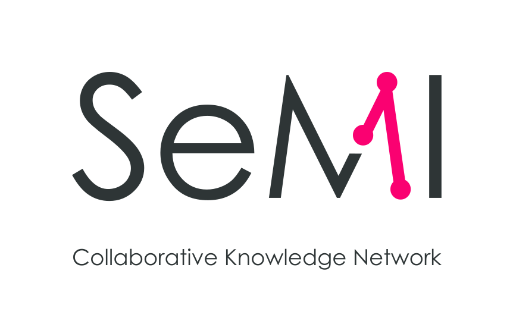
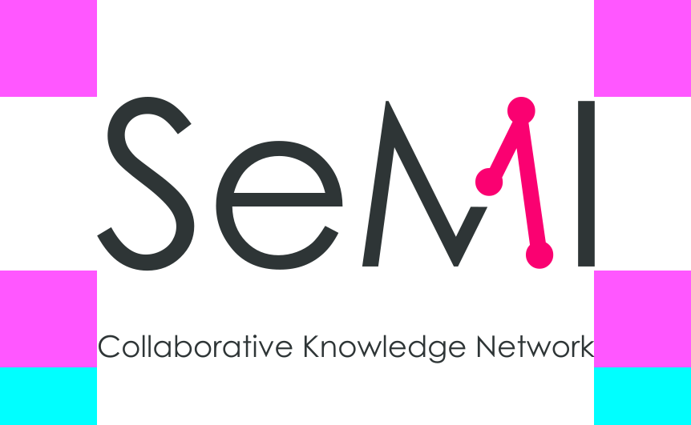
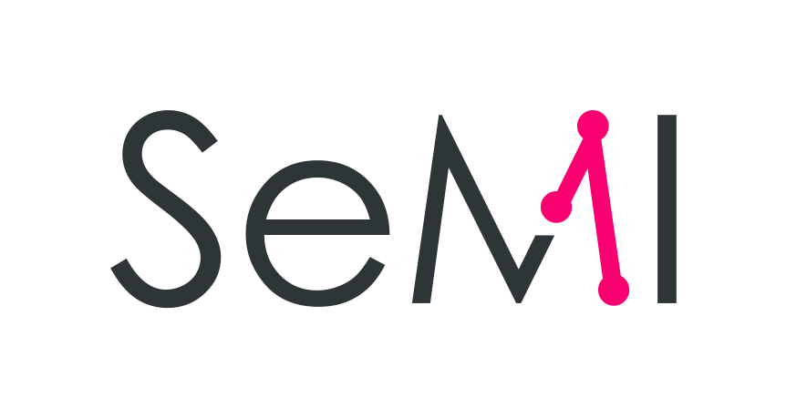

SeMI’s logotype is based on Century Gothic.
Century Gothic is a native digital typeface, optimised for use in the digital domain first.
It is a spacious, modern version of Futura optimised for on-screen usage. Futuristic—yet rooted in tradition—it retains the graceful geometric looks of the 1920s and 30s.
The virtual ‘currency strike-through’ creates an invisible horizon, connecting the characters in a continuous flow, and is a hidden nod to the world of finance.
The geometric shapes ‘HypEn-dash’ and ‘Periodot’ form the hallmark of SeMI’s logo. Connection lines and terminals signify relationships. Mirroring them sparsely throughout the UI provides an iconic link back to the logo.
A hyphen is used to join separate words into single words.
An en-dash is used to connect values in a range or illustrates the relationship between two different words.
A period, or dot signifies an end of a sentence. After that period the next sentence continues a story, stopping at the next period. And on and on, creating a complete narrative…
This is the preferred logo. Its square-ish dimensions are ideal for most use cases.
When applying the logo, make sure to consider enough negative space around the logo. This so-called exclusion zone should always be maintained when setting the logo in a layout.
 The magenta and aqua blocks signify the exclusions zone for the full logo.When setting the SeMI logo at smaller sizes, the payoff text might become unreadable. In these cases the logo without the payoff should be used.
In scenarios when it is best suited to set the logo horizontally (email signature, letterheads, etc.) the horizontal logo can be utilised.
In situations when the logo is set to a dark background, the inverted logos are needed.
Exclusion zones for the inverted logos are the same as the regular logos.
{kind=link}
{kind=link}
{kind=link}
{kind=link}
{kind=link}
{kind=link}
{kind=link}
{kind=link}
{kind=link}
{kind=link}
{kind=link}
{kind=link}